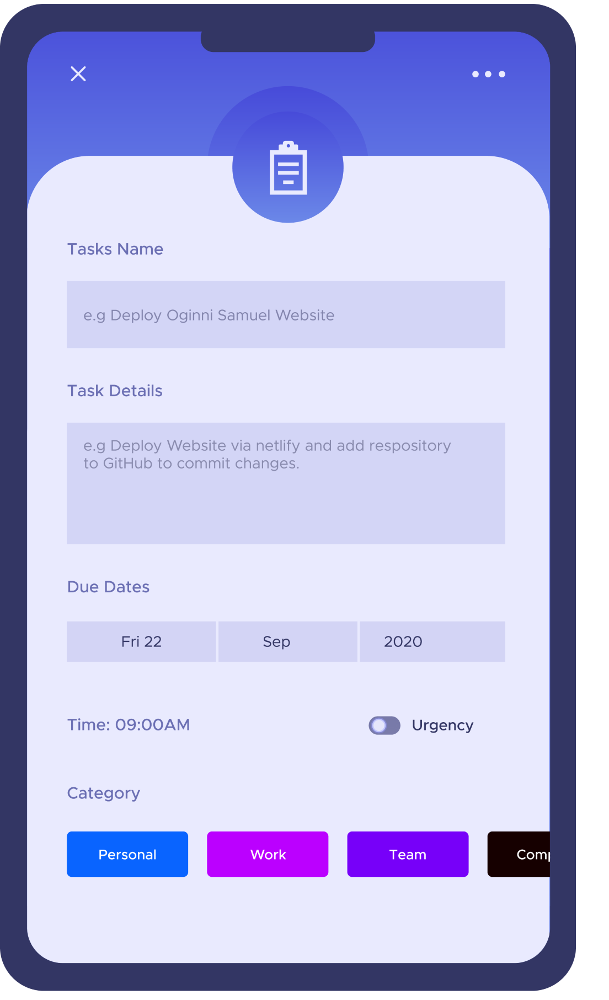
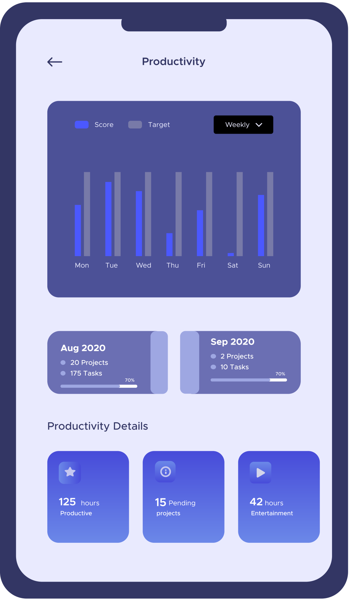
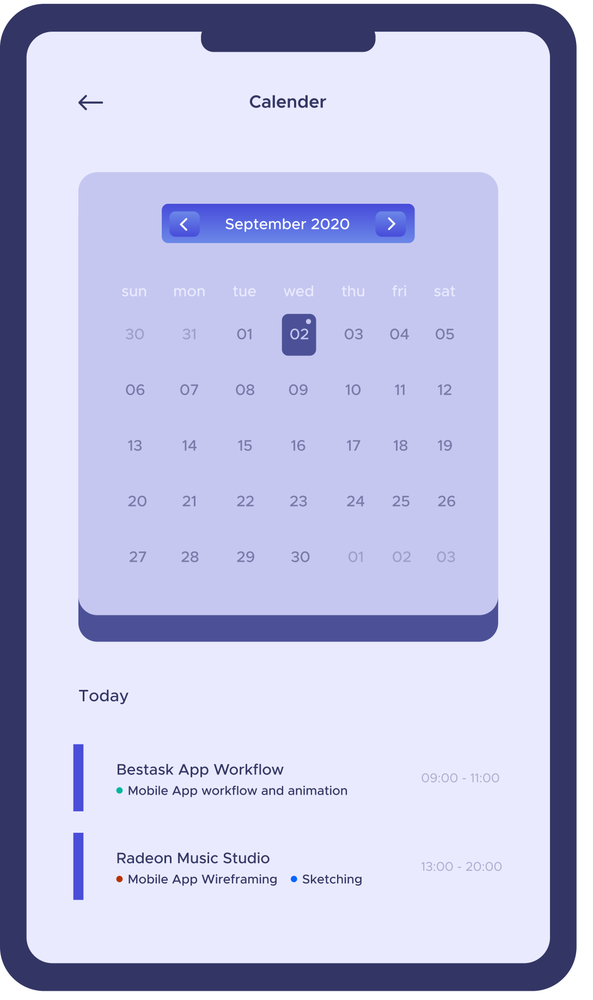

Monitor Task and never run out of schedule
How I helped build the collaborative task manager app for modern team
How It all started
Gary Kingston is looking for a remote designer to develop its new version task manager app for IOS. This app will be used by alot of people from different countries.
Before the pandemic outbreak, I was looking for a new, exciting project to work with having 3years of experience in Ui/ Ux Design and Research. I would love to gain more experience in designing a native mobile Application. I found a job vacancy and sent an email to apply for it. We had an online Interview via skype and we were given a test. I made it to the team. I was so happy when the email notification came in.
I started working with the team the following week. Gary called me via skype. That was the first dicussion we had which was to discuss the remote workflow and the app's roadmap.
Work Schedule: Full-Time Remote. Flexible Work Hours. The important thing is the end result and weekly time report.
Tools: • Adobe Xd and Adobe Suite for Design and animation • Slack for Task Management • Communication was made via Skype, Zoom and Telegram
Goals: Create Design for structured collaboration which can handle due dates, reminders, dependencies, discussions, priorities, task description, documentation, task statues, assignments etc. To manage differet levels of action and offer complete workflow management.
Workflow: I developed user flows of sections designed with description. We discussed and clarified them with the project manager, represented by Gary. I Prepared the finished layouts and sent them to the team including the iOS developer Mattieu. He examines them and perfects the result under my guidance.
Design: The interface was based on apple guidelines to be clear for any iOS user. The designs were fun to develop.

Overview
No matter what industry you work in, how much you know and how much you have already achieved - you always need to work on self-improvement. But in daily routine it is so easy to lose sight of things that it is worth working on or lose motivation.
People are very busy these days and its really very hard to keep everything in mind. We want to achieve our goals and increase productivity, but sometimes it seems there's just no way to get it all done?
Well the trick to productivity is not necessarily having more time, but instead it could simply be making the most of what we have. " Management is, above all, a practice where art, science, and craft meet. " - Henry Mintzberg
Bestask helps you get on top of your to-do lists or managing all your tasks which are important to you.
We are always taught to make specific, relevant and time bound goals. However the problem often lies not in setting the goal but in achieving it - in an organized conscious and effective way. This modern app was created exactly for this purpose.
Project Scope
Bestask App is used for managing all your "Daily Task" for increasing your productivity. It is a complete mixup of Task Manager and To-Do App which helps you stay on track in a professional and organized way. Whether your task is like accomplish projects, work todos, learning languages, mastering skills, sports or travel, etc. Bestask app helps to collect, keep, organize and remind user about all their tasks for the day.
Problems
Most times people can't focus on anything anymore at work, and it's taking its toll on thier performance and sence of well being. When people face a list of tasks, they are used to switching attention from one task to another making it hard for them to concentrate on any undetaking.
A large number of audience prefer to sleep on things until the last minute. But for tasks without specific deadlines, where do we find motivation?
Pain points
01Adding task easily
02Oranizing tasks
03Motivation
04Easy task customiztion
05Giving priority
06SHift pending tasks
07Keeping it simple, yet effective
08Tasks category
09Remember tasks
10Motivation
Solution
Bestask comes with great features whch allow users create and memorize list as well as settin deadlines for getting them done. You can also set reminders to ensure you're not caught out.
Bestask app will help you to collect, keep, organize and remind you about all your task for the day. Whether you want to accomplish project, manage daily task, work todos, mastering skills, sports or travel etc.
Attributes and extras
01Keeps your daily task align
02Remind you about all task, projects and todos.
03Easy step to adding task, with due dates and reminder.
04Clean navigations with 100% simplicity
05Add your old task to a new day
06Edit task with one click
07Select and categorize task you want to keep.
08Minimalist and stylish design
09Increase productivity
10Keep your task according to your priority
Discovery and Research
Most existing applications in this area are aimed at the fact that a person already has a specific goal and needs to track progress somewhere. However, what to do for those who want to change their lives but have no ideas for it? and how to keep to yourself motivated if you decide to become a slightly better version of yourself.
This was the main challenge in conducting further research.
Onboarding
Once a user has input its correct data and login to the app, the user can now enter the colorful zero-state screen with a call to create ther first task, project or to-dolist.
In-depth Interview
Interviews were conducted with 4 respondents to test the hypothesis based on previous activities and to learn more about the user experience of those who were previously interested in similar platforms.
" The person sets the goal and the application just helps James Almar - Journalist "
" The application becomes unnecessary when the task is created Vincius Maggie - Content Manager "
" Need to add the same task every day - Its annoying Gary Kingston - Manager "
Adding New Task
This is one of the most important button in a task manager app. It needs to be very clear to users and be as simple as possible to differenciate it from other buttons. Once a user taps the "Add new task" button a screen pops up where you can add your notes, set a due dates, create reminders and add the task to your list.
App Settings
I kept the menu tab as simple as possible so as to make the design hierachy great. User can now access their dashboard or productivity to view their weekly or monthly progress.
Style Guide
Sailec
Aa Bb Cc Dd Ee Ff Gg Hh Ii Jj Kk Ll Mm
Nn Oo Pp Qq Rr Ss Tt Uu Vv Ww Xx Yy Zz
1 2 3 4 5 6 7 8 9 0 ! @ # $ % ^ & * ( )
Colors
#333664
#0964FF
#FFFFFF
Symbols


All Screens
Its easy to start by choosing a ready-made programs with activities or creating your own unique program. Its your choice. You can also invite team to collaborate and share your task board with your team for effective time management.







Next Project